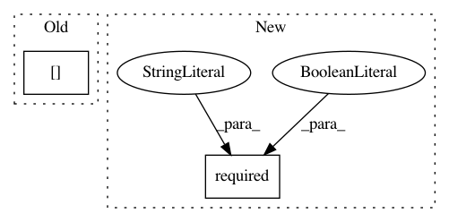

1672b5a9a47b081aa3e61c9f2ca76fae26ed8730,cheml/wrappers/cheml_cml/cheml_wrapper.py,RDKitFingerprint,fit,#RDKitFingerprint#,62
Before Change
molfile = self.parameters["molfile"]
self.parameters.pop("molfile")
elif not isinstance(self.legal_inputs["molfile"],type(None)):
molfile = self.legal_inputs["molfile"][0]
else:
msg = "@Task //%i(%s): " % (self.iblock + 1, self.SuperFunction) + "No molecule file (molfile) has been passed"
raise TypeError(msg)
// step3: check the dimension of input data frame
After Change
molfile = self.parameters["molfile"]
self.parameters.pop("molfile")
else:
self.required("molfile", req=True)
molfile = self.inputs["molfile"].value
// step3: check the dimension of input data frame
// step4: extract parameters
if "path" in self.parameters:
In pattern: SUPERPATTERN
Frequency: 3
Non-data size: 2
Instances
Project Name: hachmannlab/chemml
Commit Name: 1672b5a9a47b081aa3e61c9f2ca76fae26ed8730
Time: 2017-11-12
Author: mojtabah@buffalo.edu
File Name: cheml/wrappers/cheml_cml/cheml_wrapper.py
Class Name: RDKitFingerprint
Method Name: fit
Project Name: hachmannlab/chemml
Commit Name: 5890bf32602d818e33c7e0fe4c24bffedc849c9e
Time: 2017-09-16
Author: mojtabah@buffalo.edu
File Name: cheml/wrappers/sklearn_skl/sklearn_wrapper.py
Class Name: evaluate_regression
Method Name: fit
Project Name: hachmannlab/chemml
Commit Name: 1672b5a9a47b081aa3e61c9f2ca76fae26ed8730
Time: 2017-11-12
Author: mojtabah@buffalo.edu
File Name: cheml/wrappers/cheml_cml/cheml_wrapper.py
Class Name: DistanceMatrix
Method Name: fit